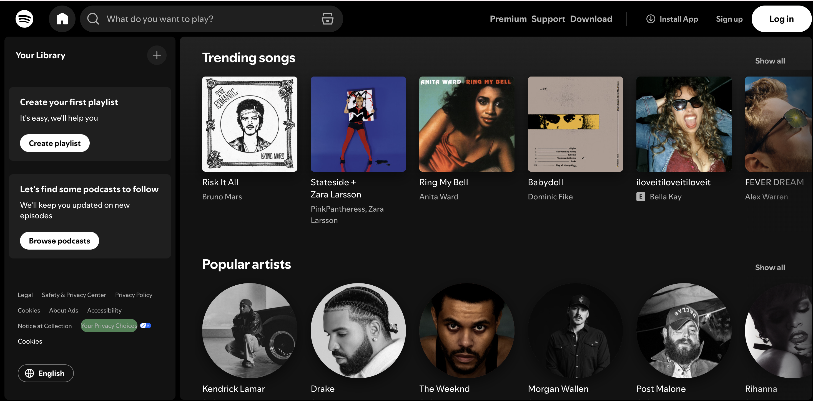

Spotify allows users to stream millions of songs, podcasts, and playlists from artists around the world. Users can explore new music through personalized recommendations and curated playlists.
Spotify’s interface makes it easy to discover trending music, follow artists, and save your favorite songs to your personal library.
